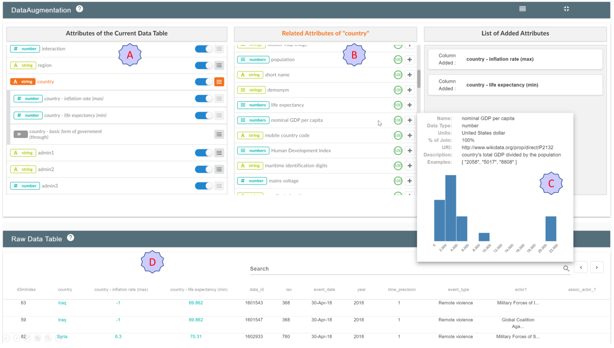

Most visual analytics systems assume that all foraging for data happens before the analytics process; once analysis begins, the set of data attributes considered is fixed. Such separation of data construction from analysis precludes iteration that can enable foraging informed by the needs that arise in-situ during the analysis. The separation of the foraging loop from the data analysis tasks can limit the pace and scope of analysis. In this paper, we present CAVA, a system that integrates data curation and data augmentation with the traditional data exploration and analysis tasks, enabling information foraging in-situ during analysis. Identifying attributes to add to the dataset is difficult because it requires human knowledge to determine which available attributes will be helpful for the ensuing analytical tasks. CAVA crawls knowledge graphs to provide users with a a broad set of attributes drawn from external data to choose from. Users can then specify complex operations on knowledge graphs to construct additional attributes. CAVA shows how visual analytics can help users forage for attributes by letting users visually explore the set of available data, and by serving as an interface for query construction. It also provides visualizations of the knowledge graph itself to help users understand complex joins such as multi-hop aggregations. We assess the ability of our system to enable users to perform complex data combinations without programming in a user study over two datasets. We then demonstrate the generalizability of CAVA through two additional usage scenarios. The results of the evaluation confirm that CAVA is effective in helping the user perform data foraging that leads to improved analysis outcomes, and offer evidence in support of integrating data augmentation as a part of the visual analytics pipeline.